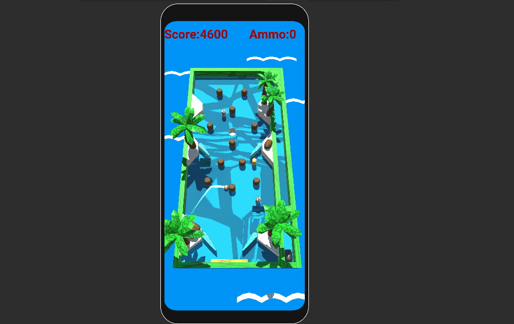
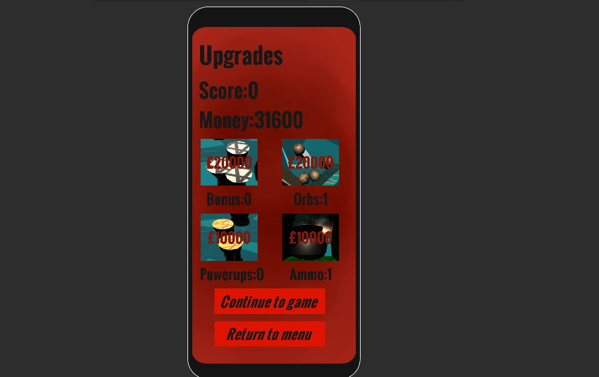

Pinball
This is a pinball game I made for android in December 2021 using Unity. I created the pinball board and environment using Probuilder, and it marked a milestone in my gamedev journey as the first game I made which was actually really fun!
This pinball implementation features multiple level layouts with different mechanics. For example, the barrel level contains barrels which will bounce the balls off with extra speed. Other mechanics include slides, static pegs, and spinners.

The game also has an upgrade system. Once the player has no balls left on the board, they are taken to a menu where their score is converted into currency which they can then spend on different upgrades such as the amount of ammo they have, the number of balls created per ammo used, and the frequency of powerups and bonus items.
Powerups and bonuses spawn randomly around the map, avoiding spawning inside the environment. Powerups have a random ability when the ball collides with them, such as adding extra flippers to each side or making a temporary bounce pad at the bottom of the board.